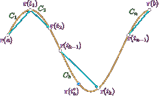

Lunghezza di un arco di curva
Un problema molto naturale di calcolo infinitesimale è quello di definire cosa si intenda per lunghezza di un arco di curva, e calcolarla. Abbiamo già incontrato un caso particolare di questo problema, nello studio delle funzioni reali di variabile reale, quando abbiamo definito la lunghezza del grafico di una funzione f: [a,b] ⟶ ℝ. Ora affronteremo il problema analogo per curve in ℝm. Il contesto più generale suggerisce di usare un approccio un po' diverso.
Un modo altrettanto naturale di impostare il problema è quello di considerare una spezzata inscritta sull'arco di curva e calcolarne la lunghezza. Approsimando sempre meglio, la curva con spezzate via via più fini (cioè con un numero crescente di segmenti, di lunghezza sempre più piccola), si dovrebbe ottenere, come limtie, la lunghezza della curva stessa.
Consideriamo per semplicità un arco di curva piana e regolare r: [a,b] ⟶ ℝ2. Per mettere in pratica questa idea, suddividiamo l'intervallo [a,b] in n intervalli, ossia consideriamo la partizione
𝓟 = {t0 = a, t1, t2, ..., tn-1, tn = b}
dell'intervallo [a,b]. Questo significa che t0 < t1 < t2 < tn, ma i punti non sono necessariamente equispaziati. A 𝓟 risulta associata la poligonale "inscritta" in Γ costituita dagli n segmenti di estremi r(tj-1), r(tj), j = 1,...,n. Indichiamo con L(P) la lunghezza di questa poligonale, evidentemente, si ha
e l'idea è che L(𝓟) approssimi per difetto la lunghezza di Γ. Infatti, anche se non abbiamo ancora dato una definizione rigorosa di lunghezza, vogliamo che questa definizione rispetti la nostra idea intuitiva che il segmento è la più breve linea che congiunge due punti. Alla definizione di lunghzza di Γ si perviene dunque facendo variare in tutti i modi possibili la partizione 𝓟 e considerando il "più grande" dei numeri L(𝓟) così ottenuti. Naturalmente non è affatto detto che qusto numero "più grande" esista.
Precisamente abbiamo:
Definizione 2.5.1. Si dice che Γ è rettificabile se
dove l'estremo superiore è calcolato al variare di tutte le possibili partizioni 𝓟 di [a,b]. In tal caso L(Γ) assegna, per definizione, la lunghezza di Γ. □
Vorremmo ora poter calcolare effettivamente tale lunghezza, almeno per le curve regolari, con gli strumenti del calcolo integrale e differenziale, come già visto nel caso dei grafici di funzioni. Per arrivare a capire quale formula ci dobbiamo aspettare, ragionimao "cinemanticamente". Sappiamo che r' rappresenta il vettore velocità lungo la curva e che quindi v(t) = |r'(t)| è la velocità scalare. D'altra parte, la lunghezza di una curva rappresenta lo spazio percorso nell'intervallo di tempo [a,b]. Ricordando la relazione
"spazio = velocità x tempo".
siamo condotti alla formula:
Questa è proprio la formula che assegna la lunghezza di una curva regonale, come afferma il seguente teorema.
Teorema 2.5.2. Sia r: [a,b] → ℝm una curva regolare. Allora r è rettificabile e risulta
Lunghezza di un grafico
Osserviamo che nel caso particolare di una curva piana regolare che sia grafico di una funzione, ossia parametrizzata da:
la formula (2.5.3) dà:
come già noto dal calcolo differenziale in una variabile.
Il prossimo risultato è intuitivo e utile. Lo enunciamo senza dimostrazione.
Teorema 2.5.4. Se una curva r è unione di due curve rettificabili r1 e r2, allora r è rettificabile e L(Γ) = L(Γ1) + L(Γ2).
La stessa proprietà si estende all'unione di un numero finito qualsiasi di curve rettificabili. In particolare: se una curva r è regolare a tratti, allora è rettificabile, e la sua lunghezza si calcola ancora mediante la (2.5.3) (dove ora la funzione integranda sarà continua a tratti).
Vediamo ora qualche esempio di calcolo di lunghezza per curve regolari nel piano o nello spazio.
Esempio 2.5.5. Per un arco di circonferenza
| x = Rcos θ | θ ∈ [θ1, θ2] |
| y = Rsin θ |
è r'(θ) = (−R sin θ, R cos θ), |r'(θ)| = R, e ds = Rdθ; L = (θ2 − θ1) ■
Esempio 2.5.6. Per l'arco di elica cilindrica
| x = R cos t | t ∈ [0,2π] |
| y = R sin t | |
| z = pt |
si ha:
r'(t) = (R sin t, R cos t, p)
Esempio 2.5.7. Per una curva piana in forma polare
ρ = f (θ)
ovvero r(θ) = (f(θ) cos θ, f (θ) sin θ) si ha
f' (θ) cos θ − f (θ) sin θ, f' (θ) sin θ + f (θ) cos θ)
dunque
Ad es. la lunghezza dell'arco di spirale di Archimede con A = 1 e ρ = θ per θ ∈ [0, 2π] è
Esempio 2.5.8. La curva piana che è grafico della funzione
non è rettificabile. Lo dimostriamo provando che l'estremo superiore delle lunghezze delle poligonali inscritte nella curva è infinito.
Consideriamo la seguente partizione di [0, 2/π]:
𝓟 = {t0, t1, t2, ..., tn-1, tn}
con
tk = 1/(π/2 + kπ) per k = 0,1,2,..., n − 1; tn = 0
La corrispondente poligonale ha lunghezza:
D'altro canto, la stima asintotica
implica che
perché la serie armonica ∑∞k=1 2/πk è divergente. Dalla (2.5.9) deduciamo allora che